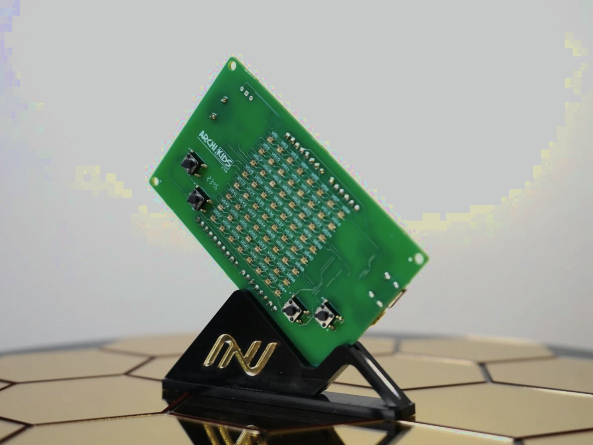

2022
1 proyecto

Hardware educativo
Archi
La placa educativa que lleva programación y electrónica a las aulas. Combina hardware, proyectos STEM y una plataforma para aprender haciendo.
- Placa programable con sensores integrados.
- Programación por bloques y proyectos guiados.
- Diseño y fabricación nacional.